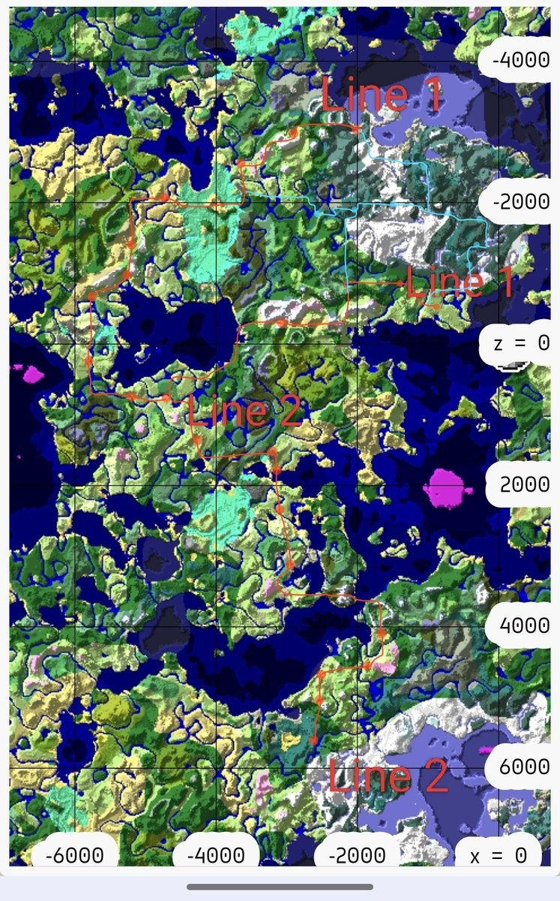
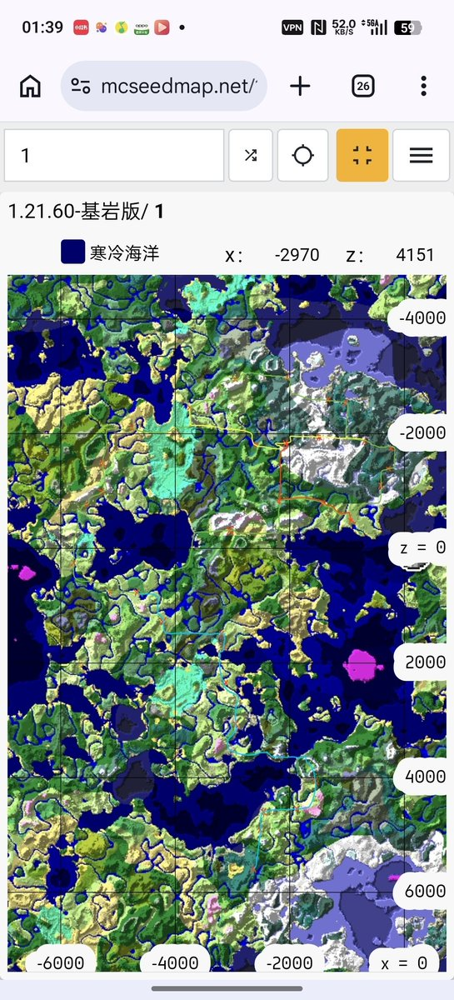

Luka Megurine 03（互fo
@LMegurine03
这个就是绿线的全部，是一个完整的环线


Luka Megurine 03（互fo
@LMegurine03
把之前在Minecraft修的那个铁路扩充了一下，左面那个图里蓝色的部分就是新添加的，然后右边那张图就是重新给整理了一下，就按四条线路处理，按颜色来标记，看起来效率会好很多（ https://t.co/ciXXURTtij